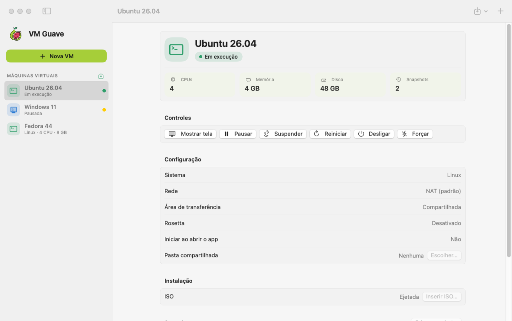
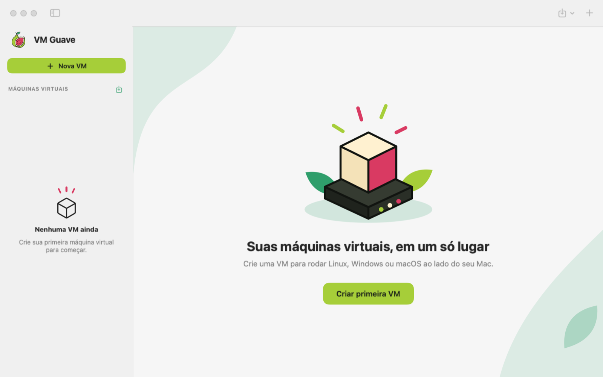

macOS
Apple Silicon (M1 ou mais novo) · macOS 14+
- Abra o
.dmge arraste o VM Guave para Aplicativos. - Na primeira vez, clique com o botão direito no app e escolha Abrir.
Nova versão · grátis e de código aberto
O VM Guave roda Linux, Windows e macOS em máquinas virtuais, numa janela ao lado dos seus apps. Crie uma VM a partir de uma ISO em poucos cliques. Tudo fica no seu computador.
Para Mac (Apple Silicon), Windows e Linux.

Recursos
Sem configurações complicadas: escolha o sistema, a memória e o disco, e clique em Iniciar.
Guarde o estado da VM antes de testar algo arriscado e volte em segundos se der errado.
Feche o app e continue depois exatamente de onde parou, com os programas abertos.
MacProteja o disco da VM com AES-256 e senha. A senha pode ficar no Keychain.
MacInternet pronta para uso, IP fixo e redirecionamento de portas para acessar serviços da VM.
Arraste arquivos do Finder para a janela da VM e use a mesma pasta nos dois sistemas.
MacAutomatize com o bgctl: ligar, suspender, snapshots, clonar, exportar e mais.
Duplique uma VM pronta em instantes ou faça backup dela num disco externo.
MacBaixe Ubuntu, Fedora ou Debian direto do app, sempre na versão mais recente.
MacNovo na versão 0.2.0
O VM Guave ganhou a identidade da goiaba, nos modos claro e escuro. Tudo o que importa fica à vista, sem menus escondidos.

Como funciona
Baixe o instalador para o seu sistema logo abaixo. É gratuito e não pede cadastro.
Clique em + Nova VM, escolha a ISO do sistema e quanto de CPU, memória e disco ela pode usar.
Clique em Iniciar e instale o sistema como num computador novo. Pronto.
Plataformas
No Mac, o VM Guave é nativo e usa a virtualização da Apple. No Windows e no Linux, usa o QEMU com aceleração por hardware.
| Recurso | Mac | Windows e Linux |
|---|---|---|
| VMs Linux | Sim | Sim |
| VMs Windows | Windows 11 ARM | Windows 10 e 11 |
| VMs macOS | Sim | Não |
| Snapshots | Sim | Sim |
| Pausar, reiniciar, desligar | Sim | Sim |
| Redirecionamento de portas | Sim | Sim |
| Suspender e retomar | Sim | Não |
| Criptografia, clonar, exportar | Sim | Não |
| Pasta compartilhada e área de transferência | Sim | Não |
| Aceleração | Apple Virtualization | KVM (Linux) · WHPX (Windows) |
Download
Última versão · todas as versões
Apple Silicon (M1 ou mais novo) · macOS 14+
.dmg e arraste o VM Guave para Aplicativos.Windows 10 ou 11 · 64 bits (x64)
64 bits (x86_64) · Ubuntu, Debian, Fedora e outros
sudo apt install ./VM.Guave_*.debsudo dnf install ./VM.Guave-*.rpmsudo usermod -aG kvm $USER e entre de novo na sessão.Perguntas frequentes
Sim. É gratuito e de código aberto, sob a licença MIT: você pode usar, estudar, modificar e distribuir, inclusive em empresas.
O VM Guave não inclui o Windows. Baixe a ISO oficial no site da Microsoft. O uso segue os termos de licença da Microsoft.
Os instaladores ainda não têm assinatura digital paga da Apple e da Microsoft. O código é aberto e os instaladores são gerados automaticamente pelo GitHub a partir dele. No Mac, use botão direito → Abrir; no Windows, Mais informações → Executar assim mesmo.
Ainda não. A versão para Mac é compilada só para Apple Silicon (M1 ou mais novo), e recursos como VMs macOS e Rosetta dependem desses processadores.
Não. O app não tem conta, anúncios nem telemetria. As VMs ficam só no seu computador. A internet só é usada quando você pede para baixar um sistema ou instalador.
Para um Linux com interface gráfica, 4 GB de memória e 32 GB de disco já funcionam bem. Para o Windows, recomendamos 8 GB e 64 GB. O disco da VM cresce conforme o uso, então não ocupa o tamanho todo de uma vez.
Abra uma issue no GitHub descrevendo o que aconteceu, o sistema que você usa e, se possível, os passos para repetir o problema.